Lex Tripalium — Les métiers du droit que l'on n'enseigne pas
↓Quand on étudie le droit, on vous montre trois portes. Il en existe des dizaines.
Lex Tripalium est née à l'Université Lyon 3, portée par une étudiante de L3 de droit public. Le constat est simple : les carrières juridiques que l'on connaît sont celles que l'on nous présente, et beaucoup d'autres restent dans l'ombre.
Nous invitons des professionnels, organisons des rencontres et ouvrons des portes pour que chaque étudiant choisisse son métier en connaissance de cause, pas par défaut.
- VIII métiers à découvrir
- III piliers, comme les pieux
- V rencontres prévues cette année
- 0 robe noire obligatoire

Les métiers
Chaque fiche sera prolongée par une rencontre avec une personne qui exerce vraiment ce métier.
- I
Juriste de collectivité
Rédige les délibérations, sécurise les marchés publics et conseille les élus d'une mairie, d'un département ou d'une région.
- II
Délégué à la protection des données
Veille à ce qu'une organisation respecte le RGPD. Le droit rencontre le numérique.
- III
Commissaire de justice
Le nouveau nom des huissiers : constats, significations, exécution des décisions de justice.
- IV
Médiateur
Résout un conflit sans procès : il écoute, reformule et fait émerger un accord entre les parties.
- V
Juriste en organisation internationale
Négocie, rédige des textes et défend des droits loin des prétoires, en ONG ou dans une institution.
- VI
Greffier
Authentifie les actes et tient la procédure. Sans lui, pas d'audience.
- VII
Administrateur judiciaire
Intervient quand une entreprise est en difficulté : sauvegarde, redressement, restructuration.
- VIII
Juriste compliance
Prévient corruption, blanchiment et sanctions pour une banque ou un grand groupe.
- ∞
Et le vôtre ?
Un métier que vous aimeriez voir présenté ? Proposez-le-nous.
Trois piliers pour tenir debout
-
I
Rencontrer
Conférences et tables rondes avec des professionnels qui racontent leur quotidien, sans filtre ni plaquette.
-
II
Comprendre
Fiches métiers, parcours, formations, concours : le chemin concret pour y arriver, étape par étape.
-
III
S'orienter
Immersions, visites de greffes et de collectivités, mise en relation avec des anciens de Lyon 3.

Au programme
Dates et lieux à confirmer.
Soirée de lancement
Présentation de l'association, des projets de l'année et premier échange avec des professionnels.
Conférence : travailler pour une collectivité
Rencontre avec une juriste territoriale : concours, missions, quotidien.
Table ronde : la médiation
Médiateurs et conciliateurs expliquent comment on résout un litige sans juge.
Immersion : une journée au greffe
Visite et échanges avec des greffiers, en petit groupe.
Forum des métiers rares du droit
Un après-midi, une dizaine de stands, des professionnels de toutes spécialités.
Une idée, une étudiante, bientôt un bureau
Prénom Nom
Fondatrice — L3 Droit public
Convaincue qu'un étudiant en droit devrait connaître tous ses horizons avant de choisir le sien.
Le bureau se construit. Il reste des places pour la communication, les partenariats et l'organisation d'événements. Nous rejoindre.
Entrez dans la galerie
Étudiant, professionnel ou simplement curieux : laissez-nous votre adresse et nous vous écrirons à chaque nouvelle rencontre.
